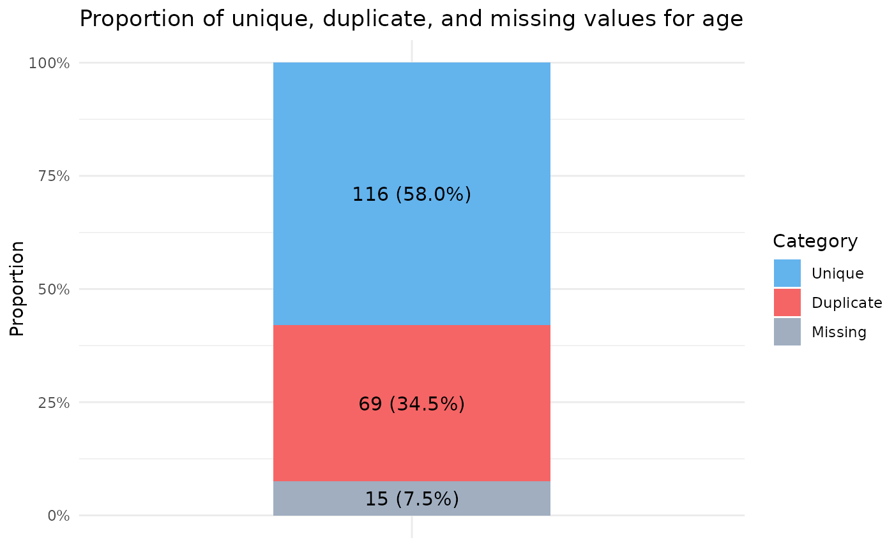
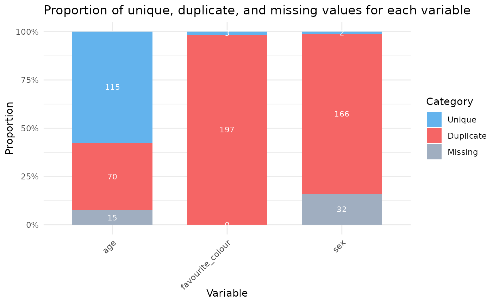

Provides an integer value for the number of duplicates found within a variable The function accepts an input from a dplyr pipe "%>%" and outputs the results as a tibble.
eg. example_data %>% dup(variable)
Value
A tibble with the number and percentage of duplicate values found, and the number of missing values (NA), together with percentages.
Examples
example_data <- dplyr::tibble(id = 1:200, age = round(rnorm(200, mean = 30, sd = 50), digits=0))
example_data$age[sample(1:200, size = 15)] <- NA # Replace 15 values with missing.
dup(example_data, age)

#> # A tibble: 1 × 7
#> Variable n n_unique n_duplicate percent_duplicate n_missing
#> <chr> <int> <int> <int> <dbl> <int>
#> 1 age 200 116 69 37.3 15
#> # ℹ 1 more variable: percent_missing <dbl>
# It is also possible to pass a whole database to dup and it will explore all variables.
example_data <- dplyr::tibble(age = round(rnorm(200, mean = 30, sd = 50), digits=0),
sex = sample(c("Male", "Female"), 200, TRUE),
favourite_colour = sample(c("Red", "Blue", "Purple"), 200, TRUE))
example_data$age[sample(1:200, size = 15)] <- NA # Replace 15 values with missing.
example_data$sex[sample(1:200, size = 32)] <- NA # Replace 32 values with missing.
dup(example_data)

#> # A tibble: 3 × 7
#> Variable n n_unique n_duplicate percent_duplicate n_missing
#> <chr> <int> <int> <int> <dbl> <int>
#> 1 age 200 115 70 37.8 15
#> 2 sex 200 2 166 98.8 32
#> 3 favourite_colour 200 3 197 98.5 0
#> # ℹ 1 more variable: percent_missing <dbl>